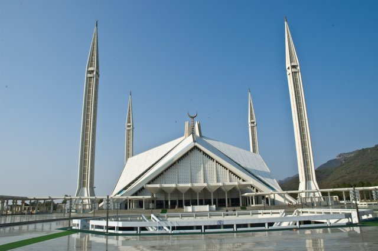
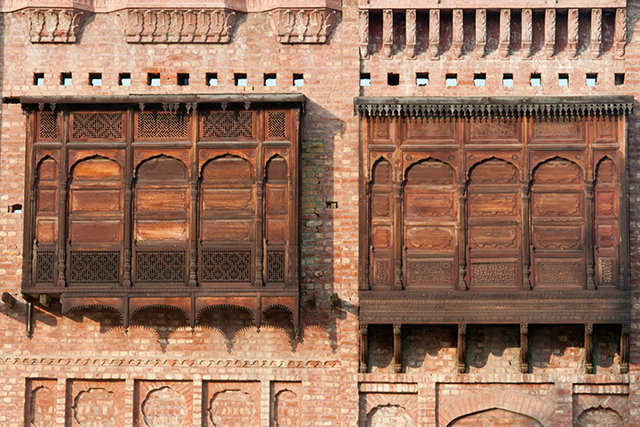
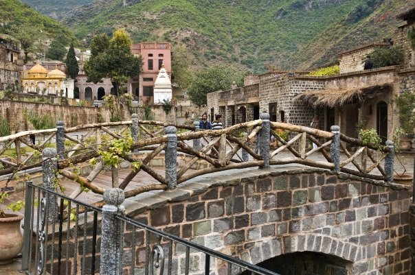
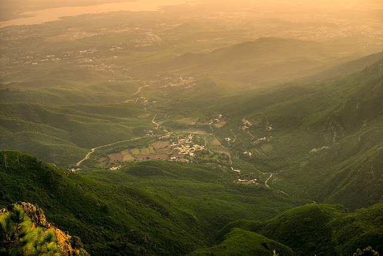
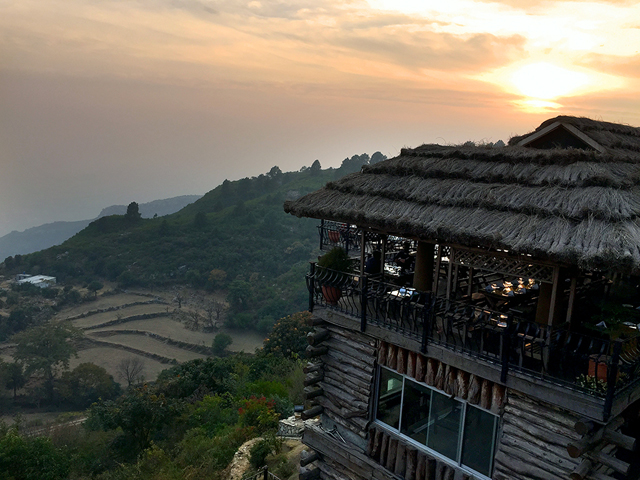
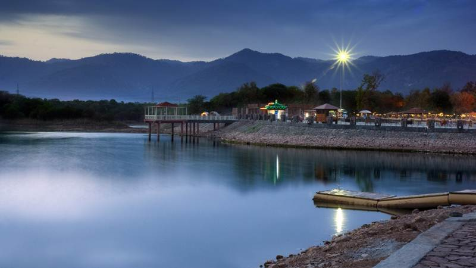
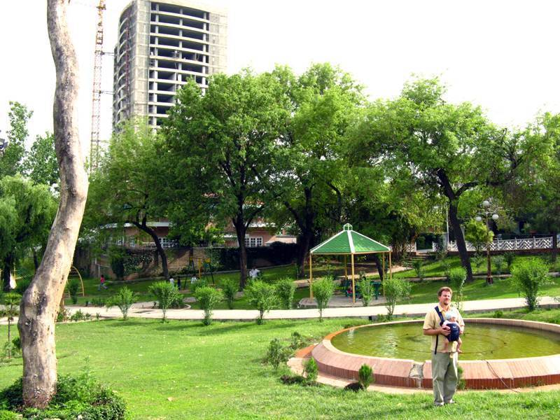

Creating beauty and preserving cultural heritage are goals for any assiduous urban planner,
and few capitals around the globe can kill two birds with one stone,
juxtaposing the old and the new with spectacular neck-craning wonders.
Pakistan’s capital city of Islamabad however has some legitimate swagger
to boast about. Stunning pyramidal mosques share the green cityscape, dotted with relaxing and family-friendly parks, rustic ruins, and avant-garde markets for the youthful hip crowd. Its no wonder that Pakistan’s pride gets on the podium for being the 2nd most beautiful city in the world, an often overlooked prestige that many people are oblivious to.
Faisal Mosque

Recognized as one the most iconic structures of Islamabad in travel photography, the desert-tented mosque holds one of Islam’s most divine places of worship as it stretches above a surface area of 5000 square meters. Flank
ed with four towering spires on each corner, the sacred temple stands as an illuminated beacon from any vantage point across the city.
Accommodating nearly a quarter million people to worship, the modern-looking wonder is situated at the foundation of the Margalla hills.
Intricately carved mosaics of marble and glass in triangular patterns hang from the tented ceiling in the prayer room which itself can hold over 10,000 people. Adjacent to the prayer room is the primary lecture hall as well as a library, restaurant and a cafe.
LokVirsa Museum

Five minutes by foot from Pakistani’s monument, the LokVirsa museum, meaning “place of people’s heritage,” is another beautiful exhibit illustrating the unique culture of Pakistani people. Working in collaboration with UNESCO, the museum owes its outstanding maintenance and well-preserved artifacts to the organization’s donations.
Displaying pieces of pottery, art, musical instruments, religious statues, and architectural relics the museum takes you on a pleasant walk through an outside garden while escorting you through nine galleries of Buddhist and Sufi shrines dating back to antiquity.
Saidpur Village

If your’re looking for a rustic down-to-earth break from Islamabad’s glitzy malls and teeming bazaars, Saidpur village is a great place to experience authentic village life in a 21st century metropolis. Meandering through the square-roofed village in a ravine of the Margalla hills, one can visit a Hindu temple and a Sikh gurdwara.
Feel free to roam the laid-back gravelly streets as children run and greet and you around the ancient artwork and residents playing sitaars enjoy the town’s simple and traditional lifestyle.
High quality restaurants such as Des Pardes and DeraPakhtoon will give you some sizzling plates of spicy chicken masala as you gaze upon the Himalaya foothills.
Margalla hills and Daman-e-Koh Park

The hilly forest-covered terrain of the Margalla range leading up to the Himalaya mountains is visible around Islamabad and is often traversed by vista-seeking enthusiasts.
Walking up the trails you may see some of the range’s abundant wildlife such as the Rhesus macaque monkey and the Asian Paradise flycatcher, a rare and exotic bird with a long light-grayish tail.
Meaning “foot hills” in ancient Persian language, Daman-e-Koh is a spectacular vista point in the Margalla hills where one can get a panoramic view of Islamabad and the picturesque Faisal mosque on the horizon.
Monal Restaurant

Located in Daman-e-Kohpark, this high quality and affordable restaurant specializes in chicken and rice dishes ranging from chicken Seekh kebabs to Biryani South Asian rice. According to TripAdvisor,
the restaurant is ranked as the number one eating-out joint in Islamabad and the view over the city is irresistible.
Rawal Lake

Rawal Lake is the artificial lake of drinking fresh water supply for people residing in Islamabad and Rawalpindi. Rawal Lake is situated inside the separated division of Village Malpur, Bani Gala and Margalla Hills National Park.
It is the most beautiful outing point for the visitors. Here visitors can enjoy fishing, picnic & boating.
Japanese Parks

Japanese Park is an extremely marvelous outing point situated on Pir Sohawa Road, close to Islamabad Zoo Pakistan. Japanese park covering an area of 25 acres with variety of 152 challenging swings was gifted Pakistani children by Japanese government in December 30, 1985.Japanese Park Islamabad is a stunning park with first-class playing field and plenty of entertaining activities for children including: swings, monkey bars, slides, and many more. It offers refreshment & entertainment to people of all ages. Parent’s love to take their children to such a beautiful place